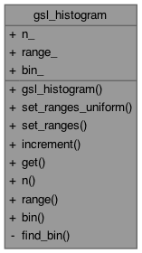
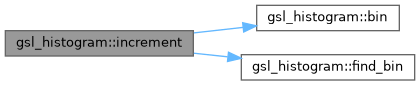
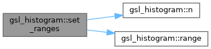

- Generated on Wed May 6 2026 11:51:50 for OPALX (Object Oriented Parallel Accelerator Library for Exascal) by
 1.9.8
1.9.8
|
OPALX (Object Oriented Parallel Accelerator Library for Exascal) master (874804e1fce8)
OPALX
|
1D histogram with explicit bin edges. More...
#include <GSLHistogram.h>

Public Member Functions | |
| gsl_histogram () | |
| void | set_ranges_uniform (double xmin, double xmax) |
| Set uniform bin edges over \([x_{\min}, x_{\max}]\). | |
| void | set_ranges (const double *range, size_t n) |
| Set bin edges from an explicit array. | |
| void | increment (double x) |
Increment the bin containing x by 1. | |
| double | get (size_t i) const |
Get the bin count for index i. | |
| size_t | n () const |
| Number of bins. | |
| const std::vector< double > & | range () const |
| Bin edge array. | |
| const std::vector< double > & | bin () const |
| Bin count array. | |
Public Attributes | |
| size_t | n_ |
| std::vector< double > | range_ |
| std::vector< double > | bin_ |
Private Member Functions | |
| size_t | find_bin (double x) const |
1D histogram with explicit bin edges.
Definition at line 31 of file GSLHistogram.h.
|
inline |
Definition at line 33 of file GSLHistogram.h.
|
inline |
Bin count array.
Definition at line 86 of file GSLHistogram.h.
References bin_.
Referenced by increment().
|
inlineprivate |
Definition at line 94 of file GSLHistogram.h.
Referenced by increment().
|
inline |
Get the bin count for index i.
| i | Input: bin index. |
Definition at line 71 of file GSLHistogram.h.
References bin_.
Referenced by gsl_histogram_get().
|
inline |
Increment the bin containing x by 1.
| x | Input: sample value. |
Definition at line 61 of file GSLHistogram.h.
References bin(), bin_, and find_bin().
Referenced by gsl_histogram_increment().

|
inline |
Number of bins.
Definition at line 80 of file GSLHistogram.h.
References n_.
Referenced by gsl_histogram_bins(), gsl_histogram_get_range(), and set_ranges().
|
inline |
Bin edge array.
Definition at line 83 of file GSLHistogram.h.
References range_.
Referenced by gsl_histogram_get_range(), and set_ranges().
|
inline |
Set bin edges from an explicit array.
| range | Input: array of \(n+1\) bin edges. |
| n | Input: number of edges (must be \(n_+1\)). |
Definition at line 52 of file GSLHistogram.h.
References n(), n_, range(), and range_.
Referenced by gsl_histogram_set_ranges().

|
inline |
Set uniform bin edges over \([x_{\min}, x_{\max}]\).
| xmin | Input: lower bound (inclusive). |
| xmax | Input: upper bound (exclusive). |
Definition at line 38 of file GSLHistogram.h.
Referenced by gsl_histogram_set_ranges_uniform().
| std::vector<double> gsl_histogram::bin_ |
Definition at line 91 of file GSLHistogram.h.
Referenced by bin(), find_bin(), get(), gsl_histogram_alloc(), and increment().
| size_t gsl_histogram::n_ |
Definition at line 89 of file GSLHistogram.h.
Referenced by gsl_histogram_alloc(), n(), set_ranges(), and set_ranges_uniform().
| std::vector<double> gsl_histogram::range_ |
Definition at line 90 of file GSLHistogram.h.
Referenced by find_bin(), range(), set_ranges(), and set_ranges_uniform().